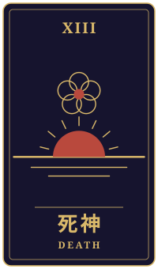

あいとる日
物語の手前に、ひとつの相談がありました。三枚のタロットをめぐるやりとりを、聞こえたままに書き留めています。
持ち込まれた相談
祖父の代からの小さな銭湯を、母と二人で続けています。この秋は雨が少なく、川の水が足りないというので、営業を週三日に減らしていました。常連さんには申し訳なかったのに、休みの朝、湯を張らない浴場の静けさの中で、私はどこかほっとしていたんです。今日、制限が解けたと聞いて、また毎日開けられるはずなのに、喜べない自分がいます。母は「やっと元通りじゃ」と嬉しそうで、弟は前から土地を手放す話をしています。ボイラーも古く、続けるなら大きなお金がかかります。私が本当はどうしたいのか、自分でも分からなくなりました。この迷いの先に何があるのか、見ていただけますか。
タロットの読み解き

過去
死神・逆位置
過去に置かれたのは死神の逆位置です。この向きには、執着や停滞、変化への恐れといった意味が寄り添うと言われています。週三日の営業に減らしたあの静かな朝に、ほっとした気持ちが生まれたのは、どこかで張りつめていたものが少し緩んだからかもしれませんね。それは怠けたことではなく、長く背負ってきた重さにふと気づいた、ということなのでしょう。

現在
愚者・正位置
今は愚者の正位置が出ています。自由や新しい始まり、無邪気さを表すカードで、先の見えない道へ軽やかに踏み出す姿が描かれています。毎日開けられるようになったのに喜べないのは、あなたの心がまだ「どう続けるか」という問いの前で立ち止まっているからかもしれません。それは迷いというより、本当の声をもう一度聞き直している時間とも言えそうです。

未来
恋人・正位置
未来には恋人の正位置が出ています。選択、調和、愛を示すカードです。ここで大切なのは、どちらかを正しいと決めることより、何を大事にしたいのかを自分の中で選び取ることなのかもしれません。銭湯を続けることも、手放すことも、お母さまや弟さんへの思い、常連さんへの気持ちが調和する形を探していけば、答えは少しずつ見えてくるように思います。
最後に
過去のほっとした気持ちと、現在の戸惑い、そして未来の選択は、どれもあなたの本当の願いを映しているのでしょう。急いで答えを出す必要はないのかもしれません。まずはお母さまや弟さんと、お湯を張る日と張らない日それぞれの思いを、ゆっくり語り合ってみてはどうでしょう。お金や土地に関わる大きな判断は、専門の方のお話も聞きながら、ご自身のペースで進めてくださいね。
帰り際の問い選ぶことで、何を手放す覚悟があるか。
読み解きは、タロット占い「月夜のアルカナ」が、この相談と引かれた三枚から返したものです。小説は同じ三枚を、別の角度から描いています。相談者は物語のための架空の人物です。相談文・読み解き・短編本文は、いずれも生成AIを使って制作しています。
物語に戻る